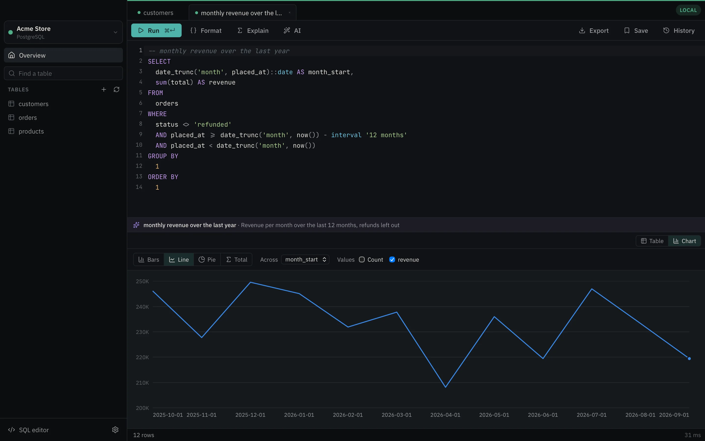
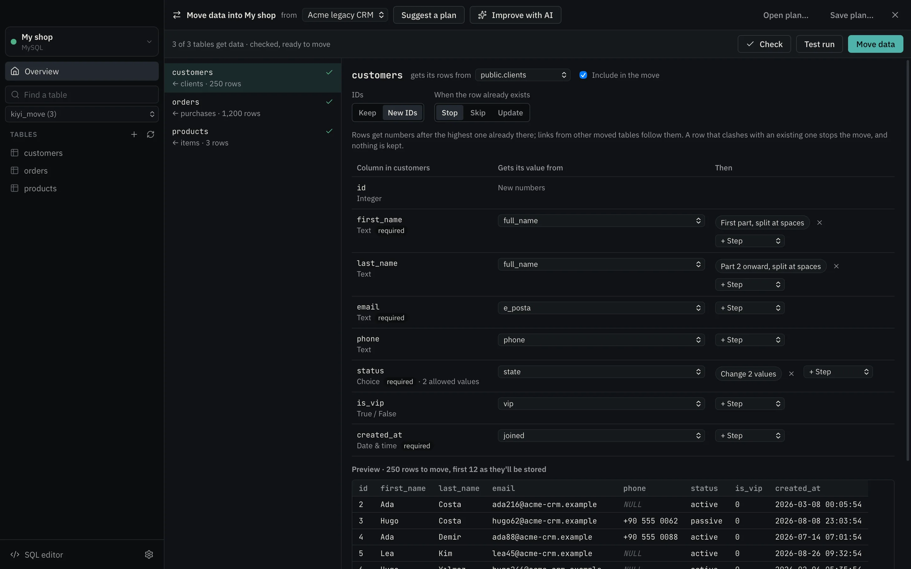

Edit like a spreadsheet
Change a cell and it's saved, with an Undo right there. Production connections wait for an explicit Save. Deleting always asks first.
Kiyi lets anyone browse, search and edit PostgreSQL, MySQL, MariaDB, SQLite and SQL Server like a spreadsheet, and ask for data in plain words. No SQL required. All of it there the moment you want it.
macOS (Apple Silicon & Intel) and Windows · MIT licensed · No account needed

Kiyi turns your sentence into filters you can see, tweak and remove one by one. Nothing runs that you can't inspect.

Type “monthly revenue over the last year” in any language. Kiyi writes one read-only query, runs it, and draws the answer. The SQL is right there to read, change or save.

Switching from another app, merging a company you took over, or leaving an old schema behind? Point Kiyi at their database and yours. It works out which table feeds which, how each column fills, and how values change on the way, even when nothing is named alike.

A Rust core and the system's own web view instead of a bundled browser. Measured on a 2021 MacBook Pro with a million-row table.
Reading 1,000,000 rows, start to finish
Kiyi reads over the network and prepares every value for the grid; the official command-line clients ran inside the database container. Every number and how to reproduce it
Change a cell and it's saved, with an Undo right there. Production connections wait for an explicit Save. Deleting always asks first.
Kiyi spots PostgreSQL, MySQL and MariaDB running on your Mac and connects in one click.
“Money / exact number”, “Required”, “Unique”, “Links to customers”. Kiyi writes the SQL.
SSH tunnels through a bastion, AWS Systems Manager, Kubernetes port-forward or the Cloud SQL Auth Proxy.
Any view or query result to Excel, CSV or JSON. Excel and CSV in, all or nothing. Take your connections to another computer, without their passwords.
Production connections are marked in red and read-only unless you say otherwise. Every destructive change is explained in plain language before it runs, and you type the table's name to confirm on production.
Schema-aware autocomplete, formatting, readable query plans, history and saved queries, and the SQL behind every action in Developer mode.
Any result as bars, a line, a pie or a single figure. Group a table by any column without writing SQL.
A diagram of every table and link; functions, triggers, sequences and users with the SQL behind them; and a comparison of two databases with the SQL that would make them match.
With pg_dump or mysqldump when you have them, Kiyi's own backup when you don't. Restores ask for the database's name first.
⌘K to jump to any table, query or connection. Saved views, hidden and frozen columns, totals of the selected cells, copy rows as CSV, Markdown, JSON or INSERTs, and find and replace across a column.
Ask in English, Turkish, German or anything else. Excel and CSV files with Turkish and other encodings come in right.
Pick a type from a list that makes sense, mark a column required or unique, link it to another table and decide what happens when that row is deleted. Kiyi turns it into the right ALTER statements for your database, in the right order.
ON UPDATE when a column changes.
Paste a connection URL, pick a SQLite file, or go through a bastion. Every step of the connection test tells you exactly what worked, and what didn't.

Free. Updates itself in the background and asks before restarting.
macOS 11 or later
Apple Silicon IntelWindows 10 or 11, 64-bit
Download installer All releasesThe macOS app is signed and notarized by Apple. The Windows installer isn't code-signed yet: if SmartScreen asks, choose More info → Run anyway.
No. Browsing, searching, filtering, editing, importing, charting and designing tables all work with buttons and plain words, and you can ask questions in any language. If you do know SQL, the SQL editor is one click away, and Developer mode shows the statements behind every action.
No. Kiyi sends the table's structure (column names, types and allowed values) and your request, never row data. You choose the provider, and you can run a model entirely on your own Mac with Ollama or LM Studio.
Mark a connection as Production and Kiyi makes it read-only by default, outlines it in red, waits for an explicit Save on edits, and asks you to type the table's name before anything destructive. Grid edits run in a single transaction and are rolled back if any row changed underneath you.
Under “Connect through”, choose SSH to go through a bastion host, AWS SSM to go through an EC2 instance using Systems Manager, Kubernetes to port-forward to a service, or Cloud SQL for the Cloud SQL Auth Proxy. The connection test shows each step: tunnel, sign-in, forwarding, database.
PostgreSQL, MySQL, MariaDB, SQLite and SQL Server (2017 and later, and Azure SQL). Kiyi's core is built so new engines plug in without changing the app.
Yes, between PostgreSQL, MySQL, MariaDB, SQL Server and SQLite in any direction, even when the tables look nothing alike. Choose Move data on the Overview, pick the other database, and Kiyi suggests which table and column goes where. You adjust the plan, check real rows, try a test run that keeps nothing, then move it all in one transaction. Plans can be saved and run again later.
Yes. Choose “Try the sample database” on the welcome screen and Kiyi opens a small store with customers, products and orders to browse, chart and edit. It lives on your computer and you can recreate it any time.
Nothing. Kiyi is free and open source under the MIT license. If you use AI, you pay your provider directly, or nothing at all with a local model.